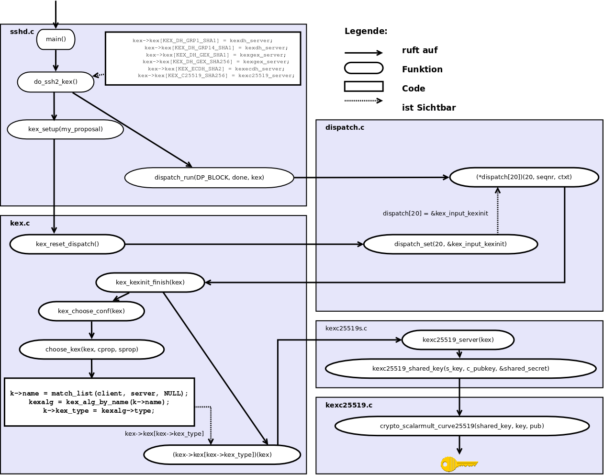
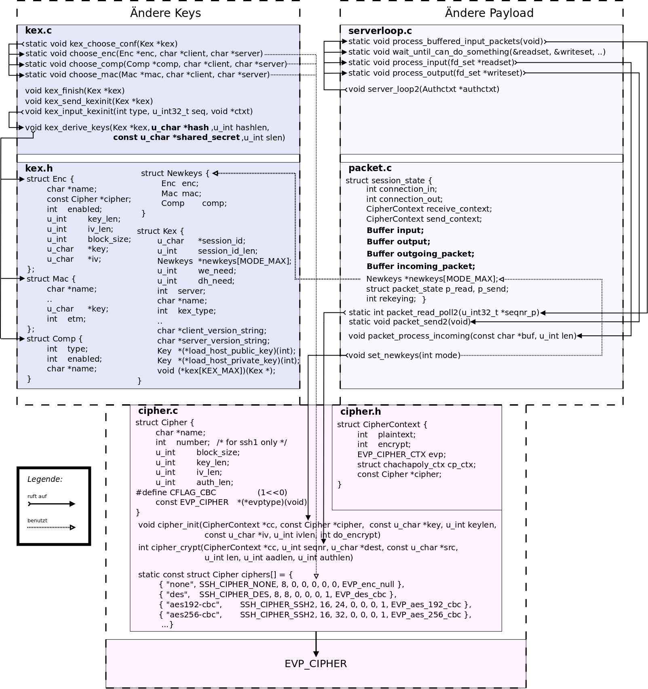

Schlüsselgenerierung OpenSSH
Im folgenden Text wird beschrieben wie die OpenSSH-Software vom Start der
Software zu dem Punkt gelangt, an dem ein Schlüssel generiert wird. Dieser
Schlüssel wird benutzt, um die SSH-Verbindung zu ver- und entschlüsseln.
Der Text stammt von dieser Bachelorarbeit.
Der OpenSSH-Server ist ein durch die Datei sshd.c definierter Daemon. In dieser Datei befin-
det sich eine MAIN ()-Funktion, welche bei dem Start des OpenSSH-Servers ausgeführt wird. In
der MAIN ()-Funktion wird nach der Behandlung möglicher Optionen, die dem OpenSSH-Server
mitgegeben werden können, ein Socket geöffnet und auf dem Port 22 auf Verbindungsanfragen
gewartet. Trifft eine Anfrage ein, wird die SSH-Sitzung initialisiert. Da das Hauptmerkmal von
SSH ist sicher zu sein, wird wie in der Abbildung 3.1 aus dem Kapitel 3.1 Interne Funktionsweise
der Schlüsselaustausch durchgeführt, um danach eine verschlüsselte Kommunikation führen zu
können.
Während des Schlüsselaustausches werden private, öffentliche und ein gemeinsamer Schlüssel er-
zeugt. Dazu können verschiedene kryptografische Verfahren benutzt werden. Um die Schlüssel
korrekt zu erzeugen und auszutauschen, müssen Datenstrukturen verwendet werden, welche auf
jedem System gleich interpretiert werden.
Damit die Art und Weise verständlich wird, wie der SSH-Daemon dies Umsetzt, ist es sinnvoll,
seine Funktionsaufrufe zu verfolgen. Gelangt man zu dem Punkt, an dem der gemeinsame Schlüs-
sel erzeugt wird, weiß man, wie dieser abgespeichert wird und welche Informationen zu seiner
Erzeugung benötigt wurden.
Die Abbildung 5.1 visualisiert die Funktionsaufrufe. Dabei werden Funktionen aus den Dateien
sshd.c, kex.c, dispatch.c, kexc25519.c und kexc25519s.c verwendet. kex.c steht für key exchange.
Durch diese Datei wird der Schlüsselaustausch koordiniert.
In dispatch.c werden dynamisch Funktionen aufgerufen. Das bedeutet, es gibt ein Array von Zei-
gern auf Funktionen, mit der Definition dispatch_fn *dispatch[DISPATCH_MAX]. Je nach dem
welcher Typ von Paket bei dem SSH Daemon eintrifft, kann die für den Typ zuständige Funktion
im Array ausgewählt und aufgerufen werden. So wird für ein new_keys-Paket die Funktion zum
Aushandeln neuer Schlüssel, statt der Funktion zum entschlüsseln von SSH-Paketen aufgerufen.
In den Dateien kexc25519s.c und kexc25519.c werden Funktionen der SSL-Bibliothek aufgerufen,
um kryptografische Verfahren durchzuführen. In diesen Dateien wird der Schlüssel erzeugt.

Zunächst wird in MAIN () die Funktion DO _ SSH 2_ KEX () aufgerufen. Sie startet den Schlüsse-
laustausch und hat Zugriff auf die kex-Struktur. In dem kex-strukt werden Informationen zu kryp-
tografischen Verfahren, Versionsnummern der SSH-Software, Sitzungs IDs und andere für den
Schlüsselaustausch relevante Daten gespeichert. In der Funktion DO _ SSH 2_ KEX () wird zuerst
KEX _ SETUP ( MY _ PROPOSAL ) ausgeführt. Sie initialisiert das kex-strukt mit den serverseitigen
Einstellungen und setzt die zwanzigste Stelle des dispatch-Arrays auf die KEX _ INPUT _ KEXINIT ()
Funktion. Die zweite Funktion von DO _ SSH 2_ KEX () ruft danach mittels DISPATCH _ RUN () die
Funktion, die an entsprechender Stelle (20) im Dispatch-Array definiert wurde auf.
Anschließend werden mit dem Client die Verfahren ausgehandelt. Im Bezug auf das Kapitel 3 wird
durch die Funktion KEX _ INPUT _ KEXINIT () die SSH-MSG-KEXINIT Nachricht und damit die
angebotenen Verfahren des Clients empfangen. Die Funktion CHOOSE _ KEX ( KEX , CPROP , SPROP )
vergleicht die Liste des Clients mit der eigenen Liste. Abhängig vom Namen des kryptografischen
Verfahrens, kexalg, wird der Typ bestimmt. Der Typ ist eine Zahl von Eins bis Sieben.
Je nach dem welches Verfahren ausgehandelt wurde, wird am Ende der KEX _ KEXINIT _ FINISH ()-
Funktion die zugehörige Funktion aus dem Array ausgewählt. Es wird von dem Strukt kex auf ein
Arrays mit dem Namen kex zugegriffen. An der Stelle kex->kex_type steht ein Funktionspointer.
Dieser wird mit dem Parameter kex aufgerufen. Initialisiert wurde dieses Array zu Beginn in der
DO _ SSH 2_ KEX ()-Funktion.
In dem Beispiel der Abbildung 5.1 wurde das Verfahren Curve25519 ausgehandelt. Mit diesem
kann ein gemeinsamer geheimer Schlüssel ausgetauscht werden. In der Datei kexc25519s.c wird
eine Funktion aus kexc25519.c aufgerufen, welche mithilfe der SSL-Bibliotheken das Verfahren
anwendet und den gesuchten Schlüssel generiert.
Nachdem KEXC 25519_ SHARED _ KEY ( S _ KEY , C _ PUBKEY , & SHARED _ SECRED ) aufgerufen wur-
de, befindet sich in dem Buffer shared_secred der Schlüssel. Dieser kann jetzt an den Honeypot
geschickt werden.
Enschlüsselung eingehender Nachrichten im OpenSSH
Die folgende Abbildung beschreibt die Architektur des OpenSSH, die sich mit der
Enschlüsselung beschäftigt.
Die linke Seite Beschäftigt sich mit der Einbringung der Keys und die rechte Seite mit der Einbringung des Payloads.
Beide Seiten greifen auf die Funktionen der cipher.c Datei zu, welche ihrerseits auf die Funktio-
nen der Envelope (EVP) Cipher zugreift. Die EVP Cipher bietet Schnittstellen für symmetrische
Verschlüsselungsfunktionen an.

In Abschnitt 5.1 wurde der Weg vom Start des Daemons bis zur Generierung des Schlüssels ge-
zeigt. Nun wird betrachtet, wie der Schlüssel gespeichert und verändert wird, damit die Entschlüs-
selung funktioniert.
Als letzten Schritt wurde die KEXC 25519_ SHARED _ KEY ( S _ KEY , C _ PUBKEY , & SHARED _ SECRED )-
Funktion aufgerufen. Der Schlüssel liegt im Buffer shared_secret. Danach wird KEX _ C 25519_ HASH ()
aufgerufen. Dies führt dazu, dass in der Variablen hash ein Hashwert steht, welcher als Sitzungs
ID benutzt wird.
Der Hash und der Schlüssel müssen, wie in Kapitel 3.2 erläutert, mit dem session identifiert, also
der Sitzungs ID und einem Buchstaben durch eine Hashfunktion zu einer neuen Bitfolge transfor-
miert werden. Dies wird mit den Buchstaben von A bis F vollzogen. Dadurch ergeben sich sechs
Bitfolgen, welche geheim sind und sich gegenseitig unterscheiden. Sie werden als Schlüssel, als
initialer Initialization vector (IV) und als Schlüssel zur MAC-Berechnung für die Verbindungen
Client-zu-Server und Server-zu-Client verwendet.
Diese sechs Hashes werden durch die Funktion KEX _ DERIVE _ KEYS (..) berechnet. Nach der Be-
rechnung stehen die Hashes in der Struktur N EWKEYS * CURRENT _ KEYS [MODE_MAX]. Wird
im Laufe des Schlüsselaustausches die SSH-MSG-NEWKEYS Nachricht empfangen, wird die
SET _ NEWKEYS (..)-Funktion aufgerufen. Durch den Aufruf werden die Werte der current_keys
Struktur in den Strukturen Enc, Mac und Comp übernommen und durch die Funktion CIPHER _ INIT ()
wird der Cipher der Enc-Struktur initialisiert. Enc, Mac und Comp stehen wiederum in der Newkeys
Struktur der Datei kex.h. Somit sind sie in den Modulen sichtbar, die kex.h einbinden.
Die rechte Seite der Abbildung 5.3 veranschaulicht die Paketbehandlung.
Nach dem Schlüsselaustausch beginnt die SSH-Sitzung. Während einer Sitzung wird jedes einge-
gebene Symbol des Clients einzeln an den Server übertragen. Wird in dem simulierten Terminal
Output erzeugt, wird es an den Client gesandt.
Durch eine select()-Funktion 1 wird auf Pakete des Clients gewartet. Eintreffende Pakete werden
von dem entsprechenden File Descriptor gelesen und in den incoming_packet Buffer gespeichert.
Dieser Vorgang wird durch die Funktionen der Datei serverloop.c organisiert.
In der Funktion WAIT _ UNTIL _ CAN _ DO _ SOMETHING (..) wird auf ein Paket gewartet und in der
Funktion PROCESS _ INPUT (..) wird es in den Buffer kopiert. Entschlüsselt und dekomprimiert
wird der Buffer durch PROCESS _ BUFFERED _ INPUT _ PACKETS (..). Anschließend wird das Ergeb-
nis in dem input Buffer gespeichert.
Die PROCESS _ BUFFERED _ INPUT _ PACKETS (..)-Funktion leitet den Aufruf an die packet.c Ebene
weiter. Dort wird PACKET _ READ _ POLL 2(..) aufgerufen. Diese Funktion ist dafür zuständig die
Paketlänge heraus zu finden, den MAC zu überprüfen und das Padding ab zu trennen. Weiter Ent-
schlüsselt und dekomprimiert sie. Das wird durch Aufrufe der cipher.c Ebene erreicht.
In cipher.c wird die CIPHER _ CRYPT (..)-Funktion aufgerufen. Sie bekommt den CipherContext, in
dem die Newkeys Struktur steht, eine Quelle, ein Ziel und eine Sequenznummer. Mit diesen Daten
werden Funktionen des EVP_Cipher aufgerufen.